|
|
Lesson Contents | In this Lesson, you will learn the basic Knowledge View concepts and configuration. |
Knowledge Management (KM) has been defined as the collection of processes or information that govern the creation, dissemination, and utilization of knowledge.
Process Director provides you with a convenient way to find and list information called Knowledge Views, or KViews, for short. The Knowledge View can display all types of information stored in Process Director, such as Forms, Process Timelines, attachments, documents, or workflows.
Knowledge View definitions are stored in Process Director and provide a “window” into the database showing related information. These are similar to predefined searches. Knowledge Views form the foundation for intelligent navigation, searching, reporting, retrieval, and ultimately delivery of information to the user community. A Knowledge View enables authenticated or anonymous users to navigate and retrieve related information based on the data classification, with the proper permissions configured.
Knowledge Views will display all matching documents, form instances, process instances, and so forth, based on the criteria specified. Knowledge View definitions can also be created that will prompt users for input information to locate information faster.
Knowledge Views also provide the foundation for the reporting component. The results of a search can:
To create a Knowledge View, navigate to the folder in which you'd like to create the Knowledge View and select Knowledge View from the Create New dropdown. Knowledge View definitions can be stored anywhere in the Content List, under any folder structure.
To configure or view the properties of an existing Knowledge View, click on the name of the Knowledge View definition, or click the check box next to the name and select the Properties hotlink.
The Knowledge View definition identifies what type of objects will be made available and how a user will navigate through them. A basic Knowledge View is defined by five configuration tabs in the Knowledge View definition: Properties, Configure, Options, Columns, and Filter.
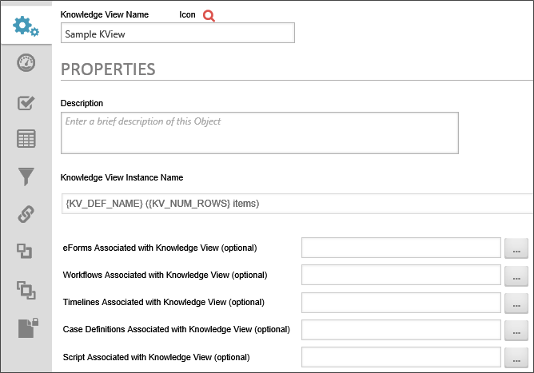
The Properties tab contains the following configuration options:
The Knowledge View name and description are important because this is what a user will see when selecting a Knowledge View to run. A custom icon can also be configured for this Knowledge View definition. To change the icon used for this Knowledge View definition, click on the  icon.
icon.
This option enables you to specify a name for the Knowledge View instance when the Knowledge View runs.
You can optionally link a Knowledge View to a specific Form definition in the Content List. When this is configured you can choose a form field from this Form from a dropdown list instead of selecting the Form in every filter. Essentially, this makes the selected Form the default Form for the filter selections. This is convenient if you have only one Form that needs to be associated with the KView.
You can optionally link a Knowledge View to a specific Workflow definition in the Content List. When this is configured you can choose a step name from this workflow from a dropdown list when configuring the column data to display.
You can optionally link a Knowledge View to a specific Process Timeline definition in the Content List. When this is configured you can choose a Activity name from this Timelinefrom a dropdown list when configuring the column data to display.
You can optionally link a Knowledge View to a specific Case definition in the Content List.
You can optionally link a Knowledge View to a custom script in the Content List.
Additional configuration options are available in the Configure Tab.
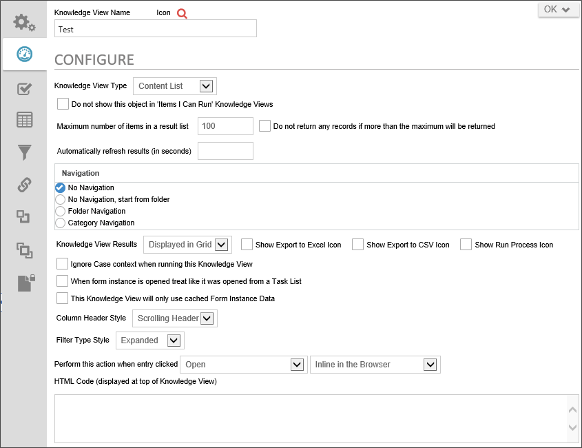
This defines the type of Knowledge View you want to display. When a type is selected different options will display allowing you to configure your knowledge view for the selected type.
For a Knowledge View definition to not appear on a user’s Home Page, you must uncheck the “Do not show this object in 'Items I Can Run' Knowledge Views” flag in the definition. If this is set, the user will only be able to run it from the Knowledge View Reports item in the navigation bar or the Content List. The user must have "Run" permissions to see the Knowledge View on their home page.
This controls the maximum number of items returned. If more items exist that match the filter criteria, a message will be displayed to the user indicating that more records exist but were not displayed because of this configuration setting.
When exporting data and using the reports, ensure this value is large enough to accommodate all of the possible items that will be returned, otherwise not all of the matching items will be downloaded in to the report.
An associated option is the checkbox labeled "Do not return any records if more than the maximum will be returned". When this option is selected, Process Director will check to see if greater than the max number of results would be returned, and if so, just displays a message informing users that the number of records returned is too large instead of returning all the results. Using this option is advised and can result in improved overall system performance.
This option will automatically refresh the Knowledge view after the configured number of seconds. This option is useful for Knowledge Views that display dat that changes in near real-time.
The Navigation section determines what type of a navigation tree should be presented to the end users. The navigation tree is optional. It is displayed as a vertical tree structure on the left side of the Knowledge View window. If a navigation tree is desired, it can be based on the folder structure in the content list or it can be derived from your category schema definition.
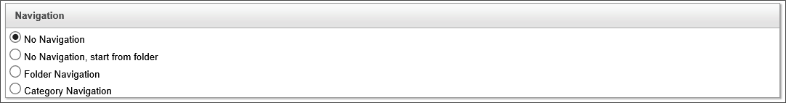
This indicates that a navigation window will appear in the left side of the running Knowledge View. The navigation tree that is displayed will be based on the folder structure in the Content List, and the folder structure will start from, and only include subfolders for, the folder you specify in this setting.
This indicates that a navigation window will appear in the left side of the running Knowledge View. The navigation tree that is displayed will be based on the category tree hierarchy defined in the Meta Data taxonomy, and the catagory structure will start from, and only include subcategories for, the folder you specify in this setting.
This indicates that a navigation window will appear in the left side of the running Knowledge View. The navigation tree that is displayed will be based on the folder structure in the Content List. When a user selects an item in the folder navigation, it will use that as filter criteria and only display items that are located in that folder and meet the defined filter criteria. The Content List, by the way, is nothing more than a Knowledge View that uses Folder Navigation.
This indicates that a navigation window will appear in the left side of the running Knowledge View. The navigation tree that is displayed will be based on the category tree hierarchy defined in the Meta Data taxonomy. When a user selects a category in the navigation window, it will use that category as filter criteria and only display items that are assigned that category and meet the defined filter criteria.
This controls where the results will display. Selecting an option with Chart will add the Graph tab to the Knowledge View tab menu.
|
OPTION |
DESCRIPTION |
|---|---|
|
Displayed In Grid |
Displays the results in a standard grid view. |
|
Displayed in a Graph |
Displays the results in a chart or graph. Selecting this option will add the Graph tab to the Knowledge View tab menu. |
|
Displayed in a Grid and Graph |
Displays the result in both a standard grid view and a chart or graph. Selecting this option will add the Graph tab to the Knowledge View tab menu. |
|
Exported to Excel |
Automatically exports the results to an Excel file. Selecting this option will add the Select Excel Template (.xls, .xlsx, .xlsm) (optional) object picker to the list of associated objects for this Knowledge view at the top of the Properties tab. You must use this object picker to select the Excel Template to use for the export from the Content List. |
|
Exported to CSV |
Automatically exports the results to a CSV file. |
|
Run a Workflow |
Automatically runs a process for each row in the results. Selecting this option will add the Select process to run on each object (optional) object picker to the list of associated objects for this Knowledge view at the top of the Properties tab. You must use this object picker to select the process you wish to run on each row of the Knowledge View.
|
You can also optionally display button icons that to export the Knowledge View results to Excel or CSV, and/or run a Workflow based on the knowledge view results.
This option will export all form fields for Forms returned in the results to a CSV file.
If the Knowledge View returns Case objects, the Knowledge view will ignore case mode when displaying the results. Normally a knowledge view always filters results by case when it is run with case context. This option will direct the Knowledge View to ignore case context
 This option should not be set unless there is a specific reason to do so.
This option should not be set unless there is a specific reason to do so.
When opening a Form instance from the Knowledge View, the Form will be opened in task mode. If you have a task active for the Form, you can complete the task.
This option is only available when a Knowledge View returns data from a form that has Form Data Caching enabled. When this box is checked, the Knowledge View will display only the form data that is stored in the Form cache. As a result, the Knowledge View may run significantly faster, but may not contain the most current data.
This option gives you the choice between selecting a fixed header that will not scroll when you scroll down the page, or a scrolling header.
This option enables you to choose whether to allow users to expand or collapse the Filters for the Knowledge View, and determine the initial view state of the filter section, i.e., expanded or collapsed.

This allows you to specify what action is taken when an entry is clicked in the result set. Depending on the option you select, additional options will appear in the user interface.
If you select the Open, Properties, or Run options from the Available Options above, an additional dropdown will appear that enables you to select how you want the item displayed to the user.
This option enables you to enter arbitrary HTML text that will appear at the very top of the Knowledge View when it is displayed to users.
The Options tab defines the results of the Knowledge View window. Providing these options will give the end user additional actions to enhance reporting and provide more control of objects in Process Director. These controls are used throughout the system (e.g. Task List, Content List, etc.).

The Content List knowledge View type will return any data items. This type requires the user to have Read permissions. Most knowledge views will be of this type.
Content List Knowledge Views have the following options.
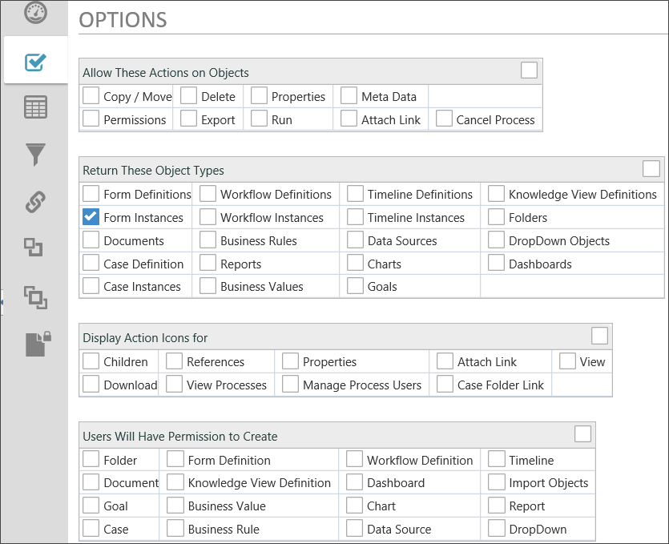
This option will allow you to run actions on a result item if checked.
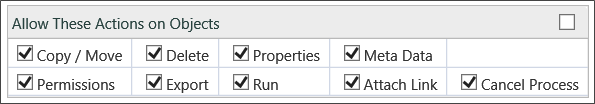
This will allow you to return the types of objects in a result set.
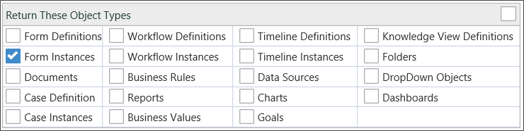
This option allows you to display Action icons for each result displayed.
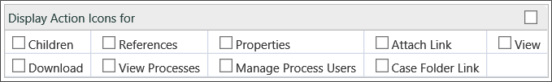
This allows the user permission to create new objects in the content list.
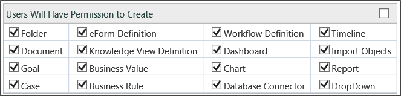

Selecting the Task List type will only display actionable items for the current user. Using this type will allow the system to dynamically refresh the Task List to allow items to be added, updated, or removed.
Task lists also incorporate the same Perform this action when entry clicked settings as the Content List Knowledge View type, as described above,
This option allows you to display specific task types.
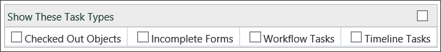

Selecting this type will only display definitions that can be run or submitted. User must have Run permission.
This option allows you to specify what definition types to display.
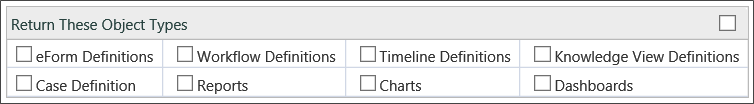
The Columns tab defines the columns to display in the Knowledge View. The column data can include form fields, workflow data, Meta Data, or various object properties. The order of the columns can be changed using the up arrow  and down arrow
and down arrow  to the right of the column. Columns can be removed using the
to the right of the column. Columns can be removed using the  icon.
icon.
The sort order can be configured in the Knowledge View; however the end user can override this be clicking on the columns names on the Knowledge View. The sort order is not used when exporting the results to a CSV or an Excel Report, it is only used when the results are displayed in the browser.

This defines optional data that should be used on the second line of every item returned. The default is the description of the item.
This defines the default sort order of the data displayed in the list. The columns that are configured will appear in this dropdown list of possible fields to sort on. The user can override the sorting by clicking on a column.
The sort order is not used when exporting the results to a CSV or an Excel Report.
This is the column name that will be displayed in the Knowledge View. This is important when using the reporting options. For more information refer to the reporting section later in this chapter.
This defines the data to display. The data can be form data, workflow status, or information about the item being returned. When displaying form data, a dropdown will be displayed with the list for form fields if the optional Form link has been configured in the Knowledge View Properties tab.
Form fields that are part of an array can also be configured as a column. When this happens, a new row will be returned for every element in the array. That array field expansion will only occur if you have configured an associated Form to link to on the Properties tab.
When a column is set to display attachments, an icon for each attachment will appear in the column. The icons provide a link at which you can download or view the attachment, and mousing over them will display the name of the file or reference,

If the Knowledge View returns data from two different Form definitions, you can mix the use of the Form Field Picker and FORM system variables. Process Director will correctly parse the system variables to return the appropriate data.
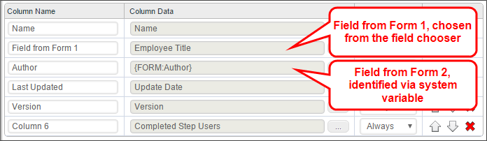
Finally, you have the option to run a process for the row by choosing Run Process from the Object Information menu item, then selecting the process you which to run for that row. When you do so, an icon for the process will appear in every row of the Knowledge View, like so:
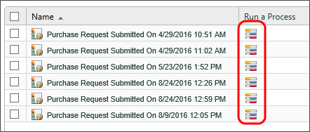
Clicking one of the icons will start the selected process, and attach the row object to the process. This is a different feature from the Run a Workflow selection in the Knowledge View results dropdown in the options tab, which is explained above.
When configuring columns in a Knowledge View, you have the ability to control whether the columns will be visible when the results are shown in the browser, whether the column is visible when exporting to CSV, when the column is visible when exporting to an Excel report, or whether the column is always visible.
When “Display the results of the Knowledge View in the browser” is chosen, the default is all columns will be displayed for all destinations. When “Export the results to a Microsoft Excel report” is chosen, the default operation is to display the first column only to the web browser, and to display all columns in the Excel report. When “Export the results to a CSV file” is chosen, the default operation is to display the first column only to the web browser, and to display all columns in the CSV export.
You can change this by selecting from the When Displayed dropdown. The following options are available in the dropdown:
For example, use the column name “Process Timeline Name” and set to Always display the “Process Timeline Name” column. Use the column name “Start Date” and set to Excel to only display the “Start Date” column in the Excel report.
The Filter tab identifies filter criteria that specifies what objects are available to this Knowledge View. The filter criteria can include form field data, categories, attribute values, or various object properties (e.g. author, document type, published). The filter criteria can identify what document versions to display – the latest document version or only the published version.
The end user can optionally be given the ability to override any of the filter values. This allows the field name and the input box to be displayed on the running Knowledge View so the user can input the additional filter information.

This indicates that the Knowledge View search should occur immediately when it is run (opened). If this check box is not turned on, the Knowledge View will display with an empty list until the Locate button is pressed to run the search.
The Filter Conditions identify what items are available to this Knowledge View according to their properties. Only items with matching conditional property values will be available to this Knowledge View.
Refer to the Condition Builder section of this guide to create your knowledge view filter conditions.
This checkbox can be set for any of the filter criteria. This allows the user to override the filter value to locate objects. For each filter field that has this box checked, an input field will be displayed on the top portion of the user Knowledge View.
If you are creating filter criteria based on the result of a dropdown or radio button list, you can limit the values used to filter the search to the values available in the dropdown. This way, neither you nor a user can enter a filter value that could not possibly appear because it is not on the dropdown. This requires that the dropdown be linked with a dropdown object.

In general, when creating filters, you should bear in mind the type of object the Knowledge view returns. For instance, if the Knowledge View returns Form instances, filters work best when filtering on Form data. Conversely, trying to filter Form instances based on data stored in other objects, like Workflows or Timelines, may return unexpected results. For instance, if a Form is used in more than one Timeline, and you try to filter the Form instances based on Timeline data, Process Director will evaluate whether the any Timeline associated with the Form meets the filter criterion you've designated. In that case, the Knowledge View may return multiple rows that contain the same Form instance, because more than one process meets the criteria.
For a Form associated with multiple processes, when the Form is returned by a Knowledge View, additional logic run in the Knowledge View to associate the Form with the process that started first, in addition to any running processes. The logic, when considering what to return in the Knowledge View, makes the following decisions about which Form to return in the Knowledge View:
This decision tree ensures that, when returning the possible Form Instances, Forms that are associated with a running process always win.
Filtering applied to array fields is complex as well. When Process Director returns values from an array, it returns all of the values in each column as a comma-separated list. If you apply a filter to an array field, and any value in the array column matches the filter, then the Knowledge View will count the filter condition as being met. The filter does not parse every row in the array, and make an individual "match' decision for each row.
Moreover, when you return Form instances that are filtered on an array, Process Director will return a Form Instance for each row in the array. In other words, if your Knowledge View returns Form instances, and a Form has three rows in the array you're attempting to filter, then three copies of the Form instance will be returned. As a result, filtering on an array often requires custom Knowledge View scripting to parse the array and filter each row individually. Additionally, users of the Advanced Reporting Component, could use that component to perform the filtering, and present the filtered results in a Report, instead of using a Knowledge View.